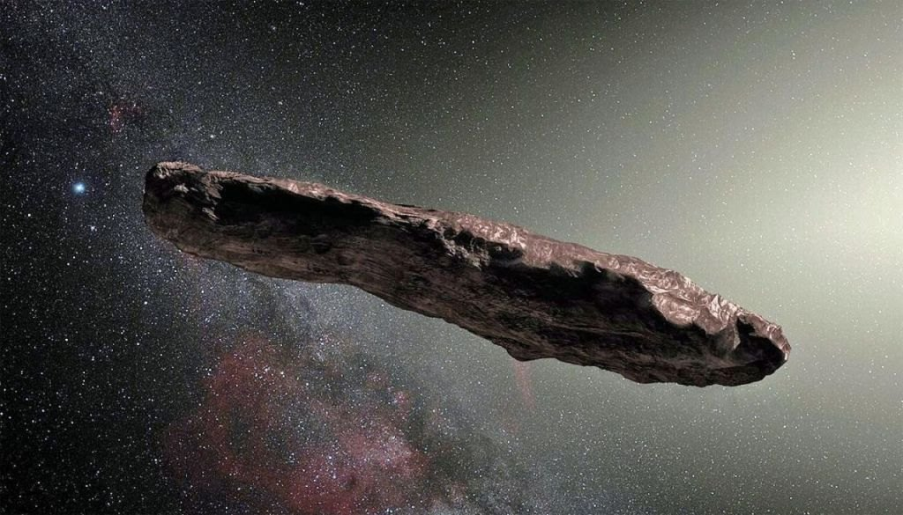

Aliens Existem?
Você com certeza já ouviu algum parente ou amigo contando uma história inacreditável sobre ter avistado um objeto não identificado – também chamados de óvnis – no céu. Os relatos vão desde visualizar luzes piscando até histórias de pessoas que afirmam terem sido abduzidas e ficado cara a cara com seres extraterrestres. A existência de Óvnis voltou a ser notícia no mundo todo em 2021 depois que o Pentágono (Departamento de Defesa dos Estados Unidos) confirmou que as imagens de óvnis no céu da Califórnia divulgadas em um vídeo pelo Portal Mystery Wire são reais. Contudo, para o pesquisador na área de ufologia Albert Eduardo, esses vídeos de objetos não identificados não são novidade, apenas se tornaram mais “retumbantes” por terem sido divulgados pelos os Estados Unidos. Albert, que há mais de 30 anos pesquisa o aparecimento de óvnis, conta que outros países como França, Irã e Canadá já divulgaram informações sobre a identificação de discos voadores e não ganharam tanta notoriedade. Entretanto, ele afirma que não há a menor dúvida de existência de vida fora da Terra e, no caso dos vídeos, a pergunta que fica é “o que os extraterrestres querem aqui no nosso planeta? ”.
(Créditos da imagem: Google Imagens)
(Créditos da imagem: Google Imagens)
O que São Ovnis?
Óvni (objeto voador não identificado, sigla em português para UFO, ou unidentified flying object, do inglês) é qualquer objeto — ou luz — visto no céu e que não é compreendido por quem os vê, naquele primeiro momento. Em geral, essas aparições são investigadas por órgãos governamentais. Pode concluir-se tratar de fenômenos naturais (planetas, reflexos, nuvens e outras ocorrências atmosféricas), gerados pelo homem (drones, balões, lasers), ou seguir sem explicação. Sobre os recentes avistamentos no Brasil, De Cicco ressalta o fato de que foram relatados por profissionais experientes. "Pilotos de aeronaves, com centenas de horas de voo, conhecem bem os fenômenos meteorológicos e di... - Veja mais em https://www.uol.com.br/tilt/noticias/redacao/2022/11/07/o-que-sao-ovnis-seis-vezes-que-luzes-suspeitas-brilharam-no-ceu-brasileiro.html
Qual a aparencia de um Alien?
A imagem que temos de extraterrestres pelo que aparece nos filmes é, normalmente, de criaturinhas verdes e assustadoras, muito diferentes de qualquer ser vivo que vemos aqui na Terra. Mas a vida fora do nosso planeta – se existir, em algum canto distante do cosmos – pode ser muito mais parecida com nós, humanos, do que a ficção científica imagina. É o que sugere um estudo divulgado nesta quarta-feira no periódico International Journal of Astrobiology, que busca pistas na clássica Teoria da Evolução de Charles Darwin para desvendar qual seria o aspecto dos nossos misteriosos vizinhos alienígenas. Para os estudiosos, a vida fora da Terra está submetida aos mesmos processos e mecanismos que moldaram os seres humanos, como a seleção natural. Por isso, assim como as espécies terrestres, eles estariam evoluindo para se tornarem mais fortes e resistentes ao longo do tempo. “Em nosso artigo, oferecemos uma abordagem alternativa, que é usar a teoria evolutiva para fazer previsões que são independentes dos detalhes específicos da Terra”, afirma em comunicado o autor do estudo, Sam Levin, professor no Departamento de Zoologia da Universidade de Oxford, no Reino Unido. “Esta é uma abordagem útil, porque as previsões teóricas podem ser aplicadas a extraterrestres que vivem a base de silício, não possuem DNA e respiram nitrogênio, por exemplo.”
(Créditos da imagem: Google Imagens)
Relato de Abdução de George Adamski
George Adamski nasceu na Polônia em 1891 e se mudou para os Estados Unidos com a família durante a juventude. Ele morreu em 1965 e, mesmo um século após sua morte, Adamski continua como uma das personalidades mais controversas quando o assunto são os OVNIs. Isso porque ele fez várias fotos do que afirmou serem discos voadores (mas especialistas analisaram o material e esclareceram que as imagens eram falsas ou mostravam objetos do cotidiano), publicou livros sobre suas aventuras com seres que seriam de outros mundos e até conquistou fãs de seus relatos. Ele alegava que observou seu primeiro OVNI em 1946, o que descreveu como um objeto grande e preto que seria parecido com um dirigível. Já em 1952, ele afirma que teria se encontrado e até se comunicado com um visitante vindo de Vênus. O encontro teria ocorrido em um deserto da Califórnia, e o extraterrestre teria vindo para avisar a humanidade para parar de se envolver com bombas atômicas antes que destruíssem o planeta — e, se considerarmos as condições extremas de temperatura e pressão em Vênus, o relato fica ainda mais absurdo. Os críticos das histórias dele o retratam como uma pessoa, digamos, "excêntrica", mas inofensiva. Já pesquisadores e até autores famosos, como Arthur C. Clarke, afirmam que Adamski fez um desserviço com suas afirmações.
.png)
(Créditos da imagem: Wikipedia)
Relato de Abdução de Travis Walton
Quem costuma acompanhar séries e documentários sobre extraterrestres já deve conhecer um pouco da história de Travis Walton, que afirma ter sido abduzido por alienígenas no dia 5 de novembro de 1975. Naquele dia, ele e outros seis homens estavam trabalhando na Floresta Nacional de Sitgreaves no Arizona, Estados Unidos. Já perto do momento de ir embora do local, eles viram uma luz brilhante do lado direito de onde estavam; ao se aproximarem, encontraram uma forma de disco voador brilhante, que flutuava a cerca de 6 m acima de uma clareira próxima — e Walton diz que decidiu ir, pessoalmente, conferir o que era. Ele descreve que, conforme se aproximava do objeto, foi atingido por uma descarga elétrica vinda da nave, que o levou para o interior da estrutura. Walton ficou desaparecido após o ocorrido, e foi encontrado somente cinco dias depois do incidente. O incidente ganhou atenção da mídia e rendeu várias discussões — inclusive controvérsias sobre a veracidade da história, já que tanto que Walter e seus amigos foram submetidos a testes de polígrafo que, além de não terem validade científica, não trouxeram resultados conclusivos.
Qual o significado desses Agroglifos?
Os círculos nas plantações, também chamados de agroglifos, são formações de tamanho considerável criadas por meio do achatamento de uma cultura, como cereais, colza, cana e capim. Estas marcas em plantações normalmente são complexas e nem sempre apresentam forma circular. Apesar de muitos estudiosos alegarem causas naturais misteriosas ou origem alienígena como explicação para o fenômeno, o consenso científico é de que quase todos os casos são feitos pelo homem, com poucas exceções possivelmente formadas por fenômenos naturais ou meteorológicos. O conceito de círculos nas plantações surgiu no final da década de 1970 por conta de hoaxes feitos por Doug Bower e Dave Chorley. Eles disseram que foram inspirados pelo caso de Tully, Queensland, Austrália, onde um fazendeiro encontrou um círculo achatado de juncos no pântano, depois de observar um OVNI, o que posteriormente foi explicado, que, na verdade, isso foi causado por um redemoinho. Os círculos no Reino Unido, país onde é registrada a maioria dos casos, não estão distribuídos aleatoriamente por toda a paisagem e aparecem perto das estradas, em áreas de densidade populacional média ou alta, próximos a monumentos do patrimônio cultural, tais como Stonehenge ou Avebury, e sempre em áreas de fácil acesso. Vestígios arqueológicos podem causar marcas em campos com formas de círculos e quadrados, mas eles não aparecem durante a noite e estão sempre nos mesmos lugares todos os anos.
(Créditos da imagem: Google Imagens)
(Créditos da imagem: Google Imagens)

(Créditos da imagem: Google Imagens)
Conclusão
De fato ainda não temos nenhuma prova cientifica que existe outros seres vivendo nessa imensidão desse universo, mas o que nos resta é acreditar que não é possivel um universo tão vasto possuir somente um planeta com seres vivos. O que nos resta é continuar pesquisando, verificando as possibilidades, e se preparar para um futuro contato com seres de fora de nossa órbita. De qualqiuer forma, esse Autor diz Bem Vindos Aliens, de forma pacifica, estão convidados a interagir com os escolhidos.
Sobre Nós
Está página foi desenvolvida pelo Técnologo Carlos Mateus Belfort, no intuito de aprimorar suas habilidades em tecnologias WEB, o tema é extremamente ficticio, os artigos foram colhidos por pesquisas web, usando o explorador da google, todos os links utilizados estão disponiveis na guia Fontes. Deixo no rodapé dessa pagina o link direto para meu repositorio no GITHUB com os projetos públicos e disponiveis para visitação. Agradeço a todos que de uma forma ou outra ajudaram no avanço desse projeto.